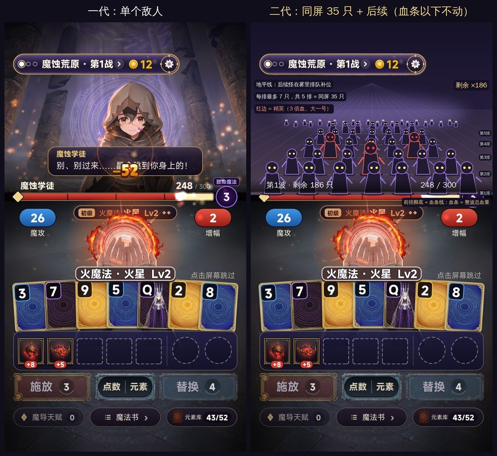
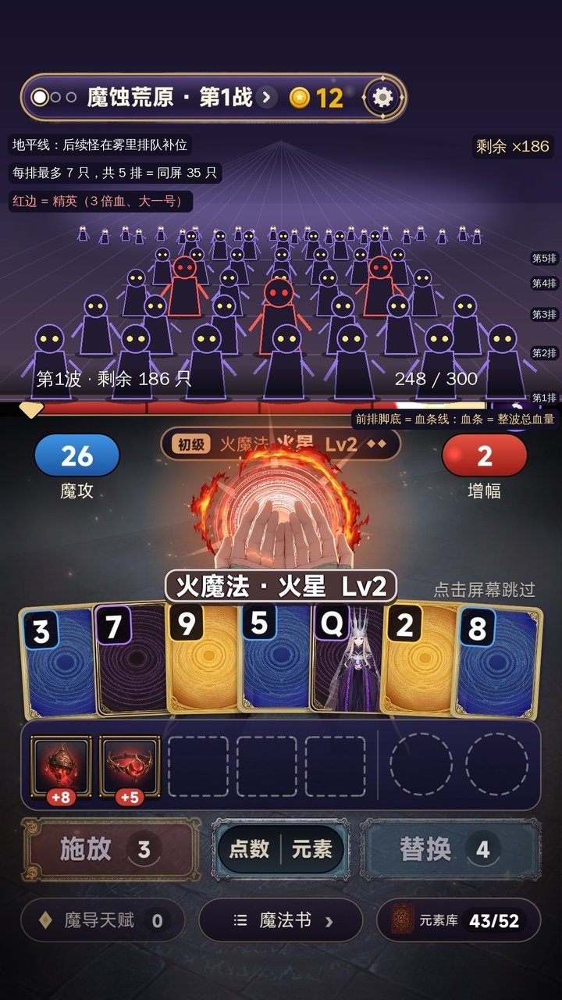
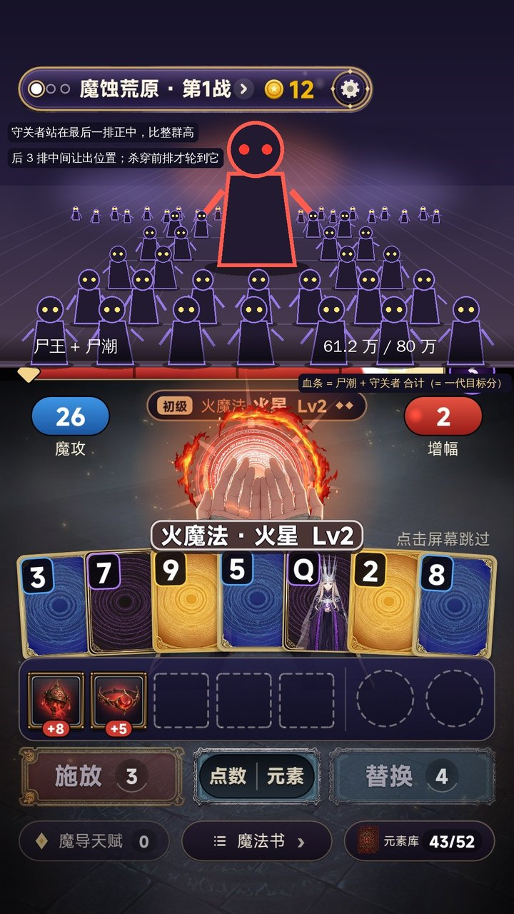

二代立项方案 v1：《末日异能：一手牌清空十万尸潮》（工作名，待确认）
- 日期：2026-11-11
- 底子：一代《手搓魔法：从小火球到灭世禁咒》（EmberCards，最新提交 17772c2）。一代仓库和线上应用都不动，二代在新仓库
zwluoqi/EmberCards2里做。 - 厂商：FIRE工作室（507397）
- 数据：
research/v2/keyword-table.md（36 个关键词，11-11 在 TapTap 实搜），团队 135 款游戏的后台数据（steamdb-creater11-11 表） - 示意图：
docs/v2/img/（站位示意图不是美术稿，怪物用的是占位剪影）
0. 结论先说
- 为什么做二代：一代的牌局核心留存是团队里最好的（同一套规则的《命运牌》近一周次留 22–27%、人均时长 83–110 分钟），但首页点击率只有 8% 左右，属于团队偏低的一档。二代要解决的不是「好不好玩」，而是「有没有人点进来」：换一个大词题材，再把画面从一个敌人换成满屏怪群。
- 题材推荐「末日异能」：TapTap 上「末日」前 40 款合计 3,121 万关注；「末日异能」2,153 万，标题里还没有游戏用这个词，搜索联想里直接有「末日抽卡sss级异能卡」。团队首页点击率最高的一款是《末日兵工厂》（24.9%）。
- 单体变割草，规则引擎一行不改：一关的目标分 = 这一波怪的总血量；每次施放的伤害还是一代算出来的那个数，只是分摊到满屏怪身上。牌型决定先打谁、打成什么形状，打不完的从前往后接着扣。
- 站位参考吸血鬼爬行者：第一人称，怪物排成 5 排，每排最多 7 只（吸血鬼爬行者拆包里的数：每排 7 只、5 排缓冲），同屏 35 只，后面的怪在雾里排队补位；守关的尸王站在最后一排正中。血条以下的界面全部不动，怪群只占一代放敌人立绘的那块舞台。
- 要你定的：题材、名字、画风二选一、玩法微调开哪几项，以及新建应用还是复用旧应用（第 13 节）。

1. 一代给二代留下了什么
| 看什么 | 数据 | 说明 |
|---|---|---|
| 留存（同一套规则） | 《命运牌：九重奏》1003219：次留 22.2%–27.4%，人均 83–110 分钟（11-07～11-11 三次取数；11-06 最早一次是 15.5% / 60 分钟，样本小） | 团队 135 款里最好；骑砍 15.5% / 52 分钟，鼠鼠出大红 11.1% / 35 分钟 |
| 吸量 | 同一款：首页点击率 7.8%–8.5%，10-12～11-10 新增只有 157 | 团队吸量好的都在 16%–25%（末日兵工厂 24.9%、收纳师 22.8%、骑砍 17.9%） |
| 一代《手搓魔法》1026165 | 只开了预约，广告没开通，没有留存数据 | 题材是西幻魔法；负责人 11-06 说过「西幻美术在 TapTap 不吸量」 |
| 能直接搬的 | 规则引擎（742 个测试）、12 系 × 4 阶施法特效、12 个禁咒全屏演出、掌心第一人称施法、击杀分级、局外成长（唤醒 / 强化）、名词层 words.lua、录屏 / 截图工具链 | 这些占一代工作量的大头 |
结论：二代不碰核心循环，力气全花在「题材 + 战斗画面」上，正好对准一代的短板。
2. 题材怎么选
2.1 三个候选
| A. 末日异能（推荐） | B. 东方志怪：天师符箓打百鬼夜行 | C. 保留魔法，只改成割草 | |
|---|---|---|---|
| TapTap 需求（前 40 合计关注） | 末日 3,121 万；末日异能 2,153 万；末日割草 1,948 万；丧尸 1,818 万 | 天师 1,141 万；符咒 612 万；道士 395 万；抓鬼 380 万；百鬼夜行 160 万 | 魔法 1,532 万；魔法割草 1,858 万 |
| 标题空位 | 末日异能、末日割草、异能割草、尸潮割草：标题都是 0 款 | 抓鬼 2 款、符咒 2 款，空位有，但词小 | 魔法割草 0 款；但「魔法」标题有 34 款，被哈利波特等大作占着 |
| 团队数据 | 末日兵工厂首页点击率 24.9%（团队最高） | 守到鸡叫：道长带全村打僵尸 17.2%，但次留 6.7% | 一代就是这个题材，没有数据 |
| 和牌的契合 | 末世网文的「异能卡」：联想词有「末日抽卡sss级异能卡」；四种元素 = 火 / 冰 / 雷 / 毒四系异能 | 最契合：符 = 牌，一手符 = 一手牌 | 一代已经验证过 |
| 和割草的契合 | 尸潮是割草最天然的画面 | 百鬼夜行也天然 | 要编一个「为什么满屏怪」 |
| 审核风险 | 血腥：丧尸打死化灰、掉晶核，不出血不断肢 | 封建迷信：用架空门派和「妖」，不出现真实宗教人物 | 无 |
| 成本 | 中：换美术、换文字，特效基本照用（火 / 冰 / 雷 / 毒和一代元素对得上） | 中偏高：特效要改成符纸、金光一路 | 最低 |
| 撞车 | 团队有《丧尸少女》（TABS 布阵）、《末日兵工厂》（塔防）：同题材不同玩法，见第 12 节 | 团队有《守到鸡叫》（僵尸道长） | 撞一代自己 |
推荐 A。需求最大、标题空位最多、团队有吸量证据；而且「末日异能 + 晶核」本身就是现成的成长逻辑：杀丧尸掉晶核，吸收晶核让异能进化。玩家一看就懂，不用再讲世界观。
B 是最好的备选：卡牌的包装最顺，画风也最有特点，只是词小一档。C 只作为成本参照，不推荐（负责人要的是换题材）。
2.2 名字（都查过 TapTap 标题，没有同名）
| 名字 | 理由 | |
|---|---|---|
| ① 推荐 | 末日异能：一手牌清空十万尸潮 | 题材大词打头（2,153 万 / 标题 0 款）；副标题带数字，同时讲清「牌」和「割草」 |
| ② | 手搓异能：从一颗火星到清空尸潮 | 接一代的「手搓」，像系列作；但「手搓异能」这个词本身没人搜 |
| ③ | 末日割草：觉醒异能一手牌清屏 | 品类词「割草」直接进标题（负责人 11-06 的规则：玩法品类游戏用「题材词 + 品类大词」） |
止损名（标题被判「套用」时换）：《尸潮异能者》（还没查重，定名时一起查）。
3. 题材映射：只换名字和画面
| 一代《手搓魔法》 | 二代《末日异能》 | 规则 |
|---|---|---|
| 元素牌（52 张，四种颜色） | 异能晶卡，四系：火 / 冰 / 雷 / 毒 | 点数、花色不变 |
| 牌型 → 12 系魔法、48 道法术 | 牌型 → 12 种异能招式（火球、连锁闪电、冰暴、陨石……） | 不变；一代的法式「弹 / 球 / 爆裂 / 连锁 / 风暴 / 雨 / 陨星 / 天罚」本来就是范围攻击，直接用 |
| 魔攻 × 增幅 = 伤害 | 威力 × 共鸣 = 伤害 | 不变 |
| 敌人生命 | 这一波尸潮的总血量 | 不变（数值就是一代的目标分） |
| 8 关 × 3 战（普通 / 精英 / 守关者） | 8 个城区 × 3 波（尸潮 / 变异尸潮 / 尸王） | 不变 |
| 施放次数 | 施放次数；画面上 = 尸潮离你还有几步 | 不变，见 4.4 |
| 替换 | 替换 | 不变 |
| 装备（小丑牌） | 异能核心 / 改造义体 | 效果不变，改名换图标（图标可以第二批再换） |
| 道具 / 升级包 / 魔导天赋 | 补给 / 进化药剂 / 避难所科技 | 不变 |
| 绕过 | 绕过 | 不变 |
| 魔力结晶（局外货币） | 晶核 | 来源改成按击杀数给，见第 7 节 T1 |
| 唤醒 / 强化 | 觉醒 / 进化 | 规则不变 |
| 失败：敌人放致命魔法 | 失败：尸潮扑上来 / 尸王出手 | 只换演出 |
| 十二系禁咒 | 十二系「终极异能」全屏演出（清屏） | 演出照用，换贴图和名字 |
8 个城区（架空城市「新港市」，不用国内真实地名，也不用日韩）：便利店街 → 地铁隧道 → 商场 → 医院 → 跨海大桥 → 体育场 → 军事基地 → 零号实验室（终局尸王）。
4. 从打一个 Boss 变成割草：规则一行不改
4.1 一句话
这一波尸潮所有怪的血量加起来，正好等于一代这一关的目标分。 每次施放的伤害还是一代规则引擎算出来的同一个数，表现层只决定这些伤害落在哪些怪身上、死多少只。scripts/game/ 不改，种子复现、bot 模拟、742 个测试照旧有效。
4.2 伤害怎么分到怪身上
- 施放后先按牌型（法式）挑出「先挨打」的一组怪（下图高亮的格子）。
- 伤害按顺序扣血：先扣这一组，打不完的按「从前排往后排、每排从中间往两边」继续扣，直到伤害用完。
- 所以击杀数只由伤害大小决定，牌型只决定先死的是谁、画面是什么形状：高牌是一道光弹穿透一列，同花是前两排横扫，四条是中间砸一个大坑，同花葫芦以上整屏清掉。
- 守关战里尸王算一个「大血包」：只有带穿透的招式（四条、同花顺、五条及以上）会把尸王放进先挨打的那组，别的招式要先杀穿前面的尸潮才轮到它。

4.3 边算分边杀怪：割草的节奏感从这里来
一代是计分动画全部走完（每张牌加魔攻、每个装备加增幅）再一次性砸下去。二代在计分过程中就开始杀：规则引擎一瞬间就算出了最终伤害，表现层按计分过程里「威力 × 共鸣」的实时乘积，把最终伤害分段放出去。效果是：
- 每亮一张牌，前排倒一两只；
- 装备触发、共鸣翻倍的那一下，后排成片倒下；
- 最后招式砸下去，收掉剩下的人头，弹出「斩杀 ×37」。
数字越往上翻，怪死得越快，正好是吸血鬼幸存者那种「越来越爽」的反馈。总伤害一分不差，只是放出来的时机变了。
4.4 施放次数 = 尸潮离你还有几步
一代顶栏右边的「致命魔法 3」改成「尸潮逼近 3」。每施放一次，没死的怪整体往前挪一排、放大一点；最后一次施放还没清完，尸潮扑上来（或者尸王出手），也就是一代的失败。规则没变，但「还剩几次施放」从一个数字变成了眼前越来越近的压迫感。
4.5 三种波次（数量是起始值，切片阶段用 bot 调）
| 波次 | 组成 | 总只数（第 a 城区） | 第 1 城区 | 第 8 城区 |
|---|---|---|---|---|
| 第 1 波：尸潮 | 3 种普通丧尸混编 | 30 × 1.3^(a−1) | 30 | 188 |
| 第 2 波：变异尸潮 | 普通 + 约 15% 精英（3 倍血、大一号、红边） | 40 × 1.3^(a−1) | 40 | 251 |
| 第 3 波：尸王 | 尸潮占 70% 血量 + 尸王占 30% | 60 × 1.3^(a−1) + 尸王 | 60 + 1 | 376 + 1 |
- 一局打通大约要杀 3,000 只，可以直接写进简介和成就（「累计斩杀十万尸潮」）。
- 一代 bot 模拟（
research/sim-out-v3.txt）：每关里最好的一手牌，伤害中位数是目标分的 0.53–1.15 倍。换算过来，打得好的一手牌会一次清掉半屏到整波，普通一手大约清掉两三成。前期一手杀几只，后期一手清屏，这种成长曲线是一代的数值自带的。 - 每只怪的血量 = 这一波的血量 ÷ 只数，玩家看不到单只怪的血量，只看血条和「剩余 ×N」，避免数字刷屏。
4.6 终极异能 = 清屏
一代 12 个禁咒全屏演出照用：放完整屏怪化灰，地平线外的后续也一起清掉，「剩余」直接归零。这是商店截图和宣传片最好用的镜头。
5. 怪物站位（重点）
5.1 吸血鬼爬行者怎么摆（团队 10-26 的拆包整理：steamdb-creater/data/2026/2026-10-26/analysis/TimidKnight-VC玩法数值拆解.md、ComboSquad-VC战斗拆解.md）
- 第一人称格子地牢，敌人站在你面前，按「排」站：每排最多 7 只（拆包
rowWidth = 7），最多 5 排缓冲（rowBufferCount = 5）。 - 很多武器只打「前排」或「每列最前面那只」；击退会把敌人推回后排，这一回合它就不出手。
- Boss 遭遇的编队基本是「15 只同主题小怪 + 1 只精英」。
- 画面是低清像素：怪是贴片，近大远小，没有景深和光影。
5.2 二代的站位规格（竖屏 1080 × 1920 参考尺寸）
一代血条（上下分界线）在 y ≈ 772。前排脚底就踩在血条上，血条以上整块舞台归怪群，以下一像素不动。
| 排 | 脚底 y | 怪高（px） | 横向间距 | 最多几只 | 说明 |
|---|---|---|---|---|---|
| 第 1 排（最近） | 766 | 150 | 146 | 7 | 被打时抖动最明显；尸潮逼近时整体放大 |
| 第 2 排 | 680 | 120 | 118 | 7 | |
| 第 3 排 | 606 | 94 | 94 | 7 | 精英常站这里（看得清，又不挡前排） |
| 第 4 排 | 546 | 74 | 76 | 7 | |
| 第 5 排 | 498 | 58 | 60 | 7 | |
| 地平线 | ≈ 465 | 30 | — | 不限 | 雾里的小剪影，右上角显示「剩余 ×N」 |
- 消失点在 (540, 270)，所有排沿透视线收窄；前排遮后排，同一排按 x 交错 ±6 px，看起来不像阅兵。
- 同屏上限 35 只：前面死一只，后面往前补一格，地平线再走出一只。一次清掉超过 35 只时，补位一波接一波涌上来再倒下，大约 1.2 秒放完。
- 精英：红边、大一号、3 倍血，优先站第 2～3 排中间。
- 尸王：站最后一排正中，比整群都高（头顶大约到 y 260，留出顶栏的位置），后三排中间三格让出来；前排杀穿后尸王往前走一步。
- 头顶留余量：最高的尸王头顶也不碰顶栏胶囊（一代反复改过的问题：头不能顶到 UI）。
- 伤害数字：只弹一个大数（一代那个）+ 最多 12 个小击杀数字，其余用「斩杀 ×N」计数，不让数字盖住怪群。


5.3 和吸血鬼爬行者不一样的地方
| 吸血鬼爬行者 | 二代 | |
|---|---|---|
| 画面 | 像素贴片、平光 | 高清手绘、景深雾、轮廓光、地面投影 |
| 怪的动作 | 两三帧原地晃 | 呼吸、摇晃、往前蹭步（程序动画，一代已有现成代码）、受击压扁闪白、死亡碎成灰并飞出晶核 |
| 打击 | 数字为主 | 招式形状（光弹、横扫、陨坑、光柱）直接打在怪群上，范围看得见 |
| 压迫感 | 敌人回合打你 | 每施放一次尸潮往前挪一排 |
| 规模 | 一场十几只 | 一波 30～376 只，一局约 3,000 只 |
6. 美术升级
6.1 画风二选一（按负责人的规矩，主流吸量和风格化各给一个）
| 方案 A：动画剧集风（推荐） | 方案 B：手绘 3D 卡通 | |
|---|---|---|
| 参照 | 团队《魔女搜打撤》 | 团队《鼠鼠出大红》（首页点击率 16.2%、次留 11.1%） |
| 感觉 | 偏成年向的美式剧集：粗线条、强剪影、高对比光 | 圆润 Q 萌的丧尸，像植物大战僵尸那一路，适龄更宽 |
| 小尺寸下认不认得出 | 好（剪影强） | 好（造型夸张） |
| 管线 | NovelAI V5（团队已有代理） | gpt-image-2 |
一代的西幻厚涂不再用（负责人：西幻在 TapTap 不吸量）。赛博霓虹也不做（负责人：做过几款都扑街）。
6.2 要出的图
| 项 | 数量 | 做法 |
|---|---|---|
| 普通丧尸 | 8 城区 × 3 种 = 24 | 透明底全身站姿，一张静图；动作全用程序动画 |
| 精英变异体 | 8 | 同上，大一号 |
| 尸王 | 8（第 8 城区两阶段） | 半身大立绘，沿用一代守关者的取景表（眼线 / 头顶） |
| 城区背景 | 8 | 第一人称纵深街景，地平线在 y 270 附近 |
| 异能晶卡牌面 | 4 系 + 人像牌 12 | 替换一代元素牌 |
| 装备图标 | 234 | 第二批：先改名，图标后换（和一代换皮时一样） |
| 商店素材 | 图标、宣传图、截图、实机录屏 | 切片过了再做 |
6.3 性能
同屏 35 只 + 粒子：每只怪一张贴图，按排批量画；击杀碎片每帧上限 200 片；一次清屏超过上限时合并成整片灰雾。切片阶段在真机上看帧率。
7. 玩法微调（都可以单独开关）
| # | 改什么 | 动不动规则 | 建议 |
|---|---|---|---|
| T1 | 晶核按击杀数给：每杀 10 只 +1（代替一代「每赢一战 +10 结晶」） | 只改局外经济，局内规则不动 | 开。击杀数天然跟着城区涨，后期晶核更多，「多杀多得」直接接上割草的爽点；强化费用曲线要跟着重新算 |
| T2 | 伤害按牌型分到怪身上、边算分边杀（4.2、4.3） | 不动，纯表现 | 开，这就是割草的核心 |
| T3 | 施放次数显示成尸潮逼近（4.4） | 不动，纯表现 | 开 |
| T4 | 超杀奖励：最后一击的伤害超过剩余血量 2 倍，额外 +1 金币（每关最多 +2） | 动经济，要跑 bot 看通关率 | 先关，切片里做成开关试 |
| T5 | 施放默认快一点：击杀动画和计分动画叠着放，单次施放从约 7.5 秒压到约 5 秒 | 不动，只改节奏 | 开；割草要节奏，一代时负责人只同意过「加快一点点」，所以要你确认 |
规则不动的项（T1 除外都是表现层）照一代「表现层不碰规则」的做法做：不读写 run.rng，有同种子回放一致性测试兜底。
8. 界面改动范围
不动：顶栏胶囊、血条位置、魔攻 / 增幅两颗数字（改名威力 / 共鸣）、法阵和掌心、手牌、装备栏、施放 / 排序 / 替换按钮、底栏三个入口、商店、营地布局。
要动的只有：
- 血条以上的舞台：一张敌人立绘换成怪群（第 5 节）；
- 血条左边的名字换成「第 N 波 · 剩余 X 只」，守关战写尸王名字；
- 右边的「致命魔法」徽章换成「尸潮逼近」；
- 全局文字过名词层 words.lua 换成末日用词（一代换皮时做过一次，492 句 + 106 条规则）。
9. 复用和新做
| 模块 | 复用 | 新做 / 改 |
|---|---|---|
规则引擎 scripts/game/ |
全部 | 0 |
| 施法特效 castfx / ultfx / 禁咒 | 全部，换贴图和颜色 | 每个法式加「落点」：打到哪几只怪 |
| 战斗舞台 magicboard | 血条、法阵、数字 | 新模块 ui/horde.lua：站位、补位、伤害分配、死亡、逼近（估计 1,000 行左右） |
| 失败演出 foespell | 框架 | 8 种「尸潮扑上来」 |
| 名词层 words.lua | 机制 | 全部用词换成末日 |
| 局外成长 | 规则 | 晶核来源（T1）、费用重算 |
| 剧情 | 结构（开场 CG、断章、营地角色） | 文本全部重写；建议减量：开场 + 每个尸王一段 + 结局，一代的魂系碎片叙事不搬 |
| 配音 | ElevenLabs 管线 | 异能招式名 48 个、尸王台词、营地角色 |
10. 里程碑
| 阶段 | 内容 | 过关标准 |
|---|---|---|
| 切片 | 第 1 城区三波打通：怪群站位、伤害分配、边算分边杀、逼近、清屏；画风 A / B 各出 3 只丧尸 + 1 张背景 | 你扫码试玩认可「割草爽感」；真机帧率稳定；同种子回放测试通过 |
| 正式制作 | 8 城区美术、文字换皮、局外晶核、配音 | 全流程能打通；bot 通关率和一代持平（±2%） |
| 预约 | 商店素材（第 0 帧就是清屏镜头）、提审 | 走一代的提审清单；广告开通后再定时上线 |
11. 目标
| 指标 | 一代（命运牌） | 二代目标 |
|---|---|---|
| 首页点击率 | 8% 左右 | ≥ 15%（团队吸量好的那一档） |
| 次留 | 22%–27% | ≥ 20%（核心没动，允许小幅下降） |
| 人均时长 | 83–110 分钟 | ≥ 60 分钟 |
12. 风险
- 团队题材撞车：团队已有《丧尸少女》（二次元少女收服 + TABS 布阵，11-07）、《末日兵工厂》（塔防）、《守到鸡叫》（僵尸道长）。按 10-22 的规则撞品类不算否决理由，但负责人 11-09 否过一次「同世界观 + 二次元少女」的立项。二代是第一人称卡牌割草、主角是觉醒者，不做少女收服；如果你觉得还是撞，就换备选 B（东方志怪）。
- 血腥审核：丧尸不出血、不断肢，打死化灰掉晶核；8+ 适龄按一代口径填。
- 标题被判套用：「末日异能」是通用词，风险低；备好止损名。
- 割草爽感要真机验证：35 只同屏 + 粒子在低端机上的帧率还没测，切片第一件事就是看这个。
- T1 改晶核来源：局外节奏要重新算（一代的成长节奏本来就只有文档测算，没有实测）。
13. 要你定
- 题材：A 末日异能（推荐）/ B 东方志怪 / 其他方向？
- 名字：①《末日异能：一手牌清空十万尸潮》/ ② / ③？
- 画风：A 动画剧集风 / B 手绘 3D 卡通？定了以后先出 3 只丧尸 + 1 张城区背景的样张给你看，再量产。
- 玩法微调：T1～T5 哪几项开？（建议开 T1、T2、T3、T5，T4 先关）
- 应用：在 FIRE工作室下新建应用（要查本周新游戏额度），还是拿一款数据差的旧应用换成二代（负责人 11-08 的做法，不占额度）？